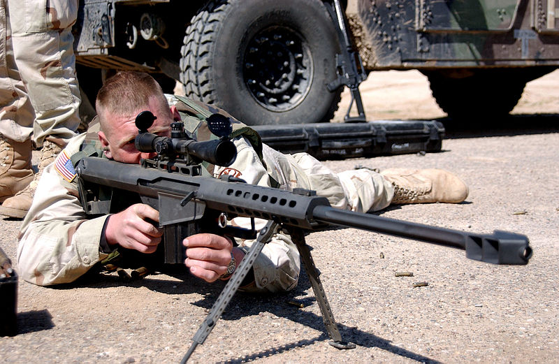

El fusil de francotirador es un tipo de arma de fuego de precisión, que permite el disparo a objetivos a muy larga distancia. Su utilización es habitual tanto en ejércitos como en cuerpos policiales de todo el mundo.
Un fusil de francotirador típico busca la mayor precisión posible en el disparo, para lo cual va equipado con una mira telescópica y utiliza munición específica para el arma que permita alcanzar largas distancias sin perder precisión de tiro. El término se suele utilizar para hacer referencia a cualquier arma de fuego de precisión con una mira telescópica que pueda ser utilizada contra objetivos humanos.
Historia
El papel militar del francotirador se remonta al siglo XVIII, si bien el tipo de fusil específico de francotirador es un desarrollo mucho más reciente. Los avances tecnológicos, y en especial el de la mira telescópica, así como la mayor precisión en la fabricación de las armas modernas,
permitieron a los ejércitos crear equipamientos específicos para soldados entrenados como francotiradores. Los nuevos fusiles les permitirían alcanzar con precisión objetivos a distancias mucho mayores en comparación con los fusiles de infantería normales.
En la Guerra de Secesión, se sabe que las tropas Confederadas montaban miras telescópicas en el fusil británico Whitworth (uno de los más modernos de la época) y que llegaron a matar a oficiales de la Unión a distancias insospechadas hasta la fecha, de más de 800 yardas (731.52 metros).
Por otra parte, los primeros fusiles de francotirador eran poco más que fusiles militares estándar equipados con miras telescópicas, diseñadas para su uso en disparos distantes. Sólo al comienzo de la Primera Guerra Mundial comenzaron a aparecer fusiles especialmente adaptados para este uso, siendo uno de los primeros el SMLE Mk III
A finales de la guerra, las tropas de ambos bandos contaban con soldados especialmente entrenados y equipados con fusiles de francotirador. Este tipo de soldados ha jugado un papel cada vez más importante en las operaciones militares desde entonces.
Caracteriscas
En comparación con otras armas, se distingue por su elevado nivel de precisión gracias a su mecanismo interno diseñado para este fin. Se trata de un producto capaz de realizar un disparo certero a un objetivo situado, incluso, por encima de 2000 metros de distancia, dependiendo de diversos factores, para lo cual se elabora con piezas de alta calidad. Se busca además que sea un arma equilibrada, con un peso medio alrededor de entre 5 y 6 kg dependiendo del modelo, marca, etc.
En los últimos tiempos se ha convertido en un arma fundamental para los francotiradores, tanto en el campo de batalla como para el desarrollo de labores policiales.
Por lo general y para comodidad del usuario, debe poder adaptarse al cuerpo del tirador, algo que se consigue gracias a una culata y a un bípode ajustables. Para lograr que el tirador visualice su objetivo a tan elevada distancia es necesario incorporar una mira telescópica además de algunos accesorios más; sin embargo, por motivos tradicionalistas, se acostumbra a prescindir de todo aquello que no aumente la precisión del fusil, por considerarlo una molestia o un estorbo.

Boletín informativo
Suscríbete a nuestros boletines ahora y mantente al
día con nuevas colecciones y ofertas exclusivas.